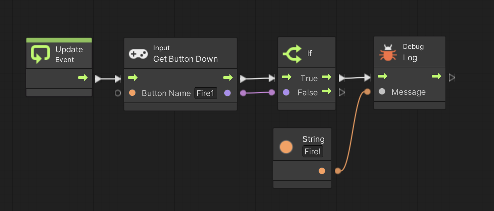

ここではゲームパッドやキーボードなどのコントローラの入力方法について学びます。
まず準備です。
テスト用に別の Script Graph を用意します
Scripts フォルダの中に入り、フォルダの空いている部分を右クリックしてメニューを表示し、Create → Visual Scripting → Script Graph を選ぶ
Scripts フォルダ内に「New Script Graph」というアセットが出来るので「Control Script」に名前を変更する
ヒエラルキーの PROGRAM をクリックしてインスペクタを表示する
Script Machine の Graph の Update Script と書いてあるセルにアセットフォルダの Control Script をドロップする
まずコントローラの上下左右入力について説明します。
現在の上下左右の入力状態を取得するユニットは Input Get Axis と Input Get Axis Raw の2つです。
それらの違いは以下の通りです。
Input Get Axis → アナログ入力用、出力結果は -1〜1の間で小数値、0 がニュートラル
Input Get Axis Raw → デジタル入力用、出力結果は -1 か 0 か 1 の整数値、0 がニュートラル
これを踏まえてまず左右入力です。
キーボードで左右入力をするための設定名と割当キーは
Edit メニュー → Project Setting → Input Manager → Axes
から確認できます。
デフォルトでは設定名が「Horizontal」、割当キーが「左右カーソル、a,d」となっています。
出力結果はマイナス値が左方向、プラス値が右方向、0 がニュートラルとなります。
では図 1 を実行して下さい。
各ユニットの「Axis Name」の中に設定名の「Horizontal」を入れます。
デバック出力の最初の行が Input Get Axis 、2行目が Input Get Axis Raw の結果です。
ゲームパッドを持っている人はゲームパットもつないで試してみて下さい。
(注) もしキーボードのキーを押しても表示が 0 のまま変わらない人は、ゲームビュー内の適当な位置をクリックしてキーボードフォーカスを移してからキーを押して下さい
図1. 左右入力の例

次は上下入力を試して下さい。
キーボードで上下入力をするための設定名と割当キーも
Edit メニユー → Project Setting → Input Manager → Axes
から確認できます。
デフォルトでは設定名が「Vertical」、割当キーが「上下カーソル、s,w」となっています。
出力結果はマイナス値が下方向、プラス値が上方向、0 がニュートラルとなります。
では図1の「Horizontal」の部分を「Vertical」に変更して実行して試して下さい。
弾を撃ったりジャンプしたりするためのボタン入力は Input Get Button ユニットで行えます。
なお Input Get Button ユニットにはいくつか種類がありますが、今回は Input Get Button ユニットと Input Get Button Down ユニット について説明します。
さて、ボタンの設定名と割当キーも
Edit メニュー → Project Setting → Input Manager → Axes
から確認できます。
デフォルトでは
「Fire1」 ・・・ 左Ctrl、マウス左クリック
「Fire2」 ・・・ 左Alt (MacはOption)、マウス右クリック
「Fire3」 ・・・ 左Shift、マウス中クリック
「Jump」 ・・・ スペース
「Submit」 ・・・ エンター
「Cancel」 ・・・ Esc
が割当たっています(もちろん設定の変更や追加も可能です)。
では Input Get Button ユニットについて説明します。
Input Get Button ユニットはボタンを押している間はずっと True、されていない時はずっと False を出力し続けます。
例えば以下の図2を実行し、Fire1 ボタンを押しっぱなしにしてみて下さい。
図2. Input Get Button ユニットによるボタン入力

一方 Input Get Button Down ユニットはボタンが押された時に一度だけ True を出力します。
例えば以下の図 3 を実行して、Fire1 ボタンを押しっぱなしにして図 2 のスクリプトとの違いを確認して下さい。
図3. Input Get Button Down ユニットによるボタン入力
